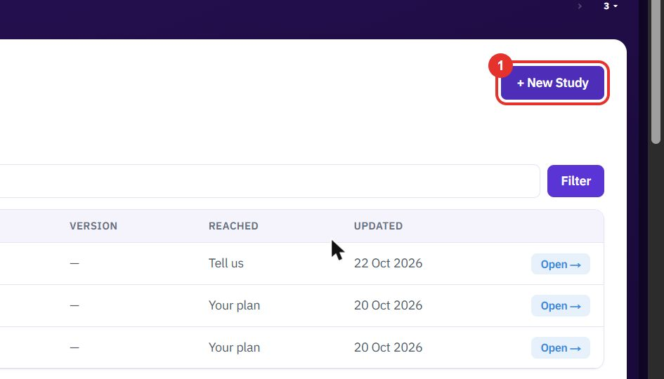
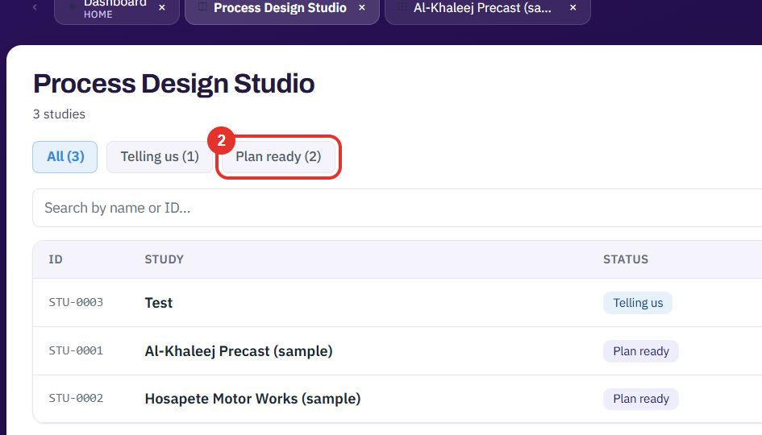
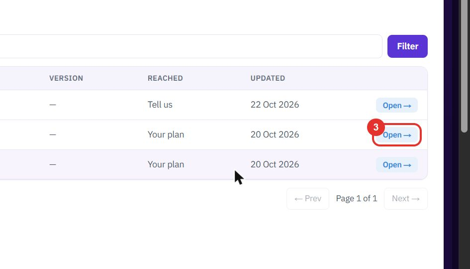
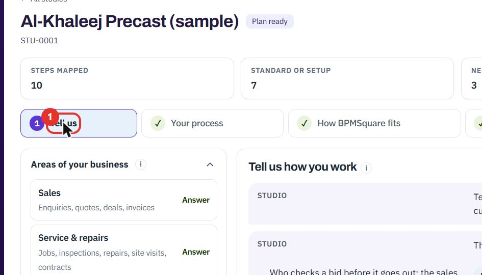
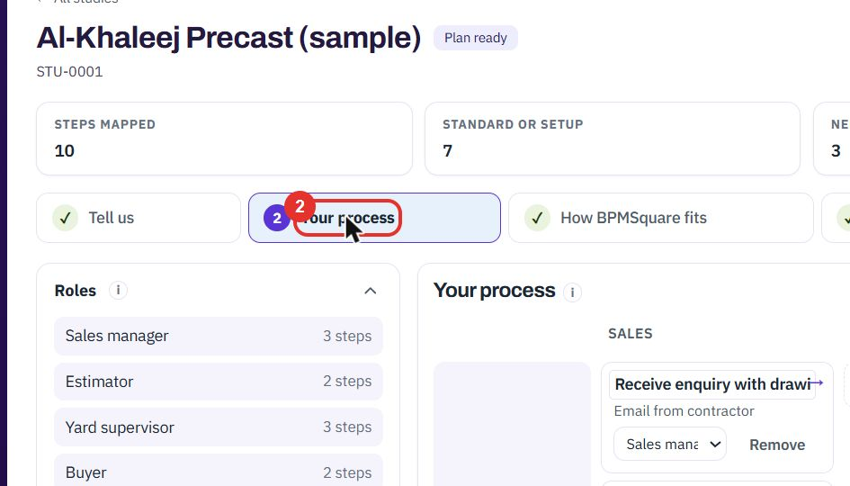
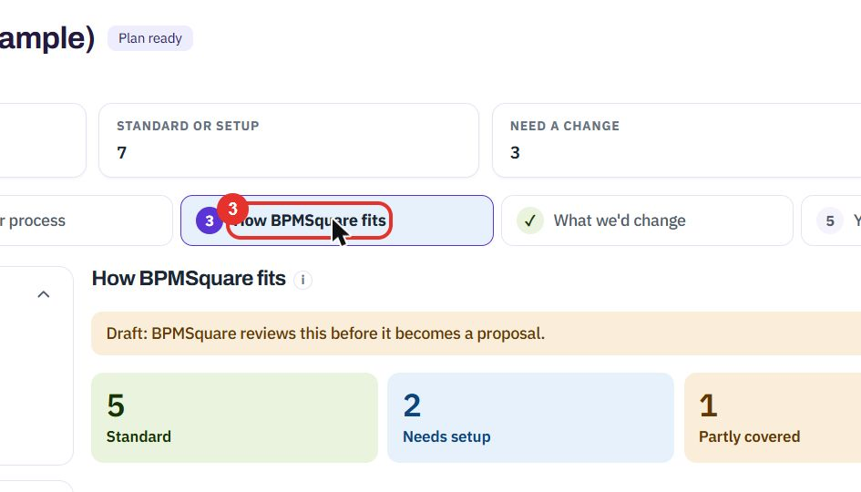
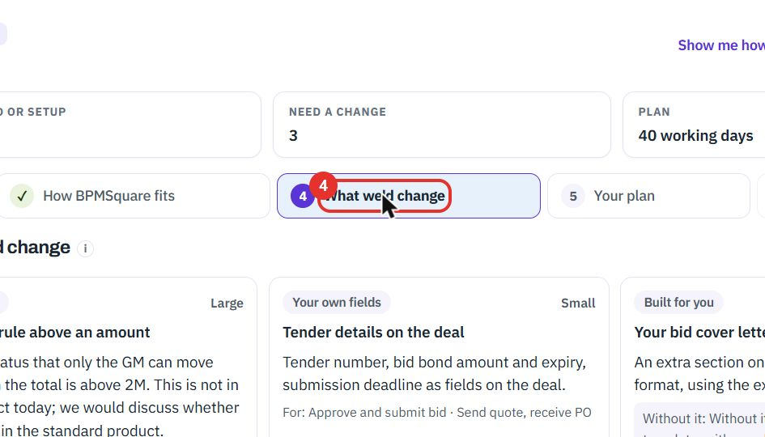
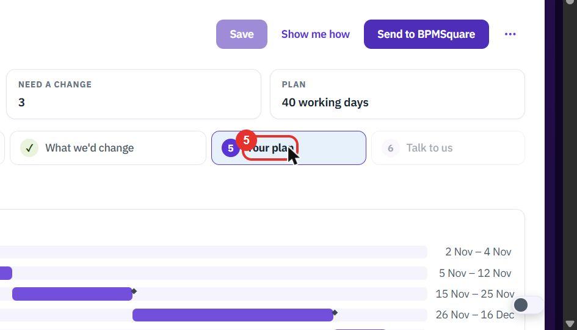
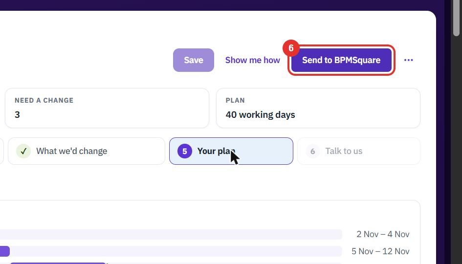

1
Click + New Study
Open Process Design Studio from the sidebar. Click + New Study at the top right to start a study for a business.

The Process Design Studio turns a description of your business into a plan. You work through six steps: tell us, map your process, see the fit, see what we would change, read your plan, and talk to us.
Do this to see your studies, start a new one, or go back to one you began.
Open Process Design Studio from the sidebar. Click + New Study at the top right to start a study for a business.

The chips above the list filter the studies by state, for example Plan ready or Telling us. The number in brackets is how many studies are in each.

Each row shows the study ID, name, status, the step it has REACHED and when it was UPDATED. Click Open → on a row.

Do this to move from a description of your business to a dated plan. The steps run left to right across the top of a study.
Click Tell us. Describe how you work in your own words. Under Areas of your business, each area, such as Sales, shows Answer where the studio has a question for you.

Click Your process. Your steps are laid out by role and by area, such as SALES, PRODUCTION & DELIVERY, PROCUREMENT and WORKFORCE. + Add step adds one and Remove takes one out.

Click How BPMSquare fits. Four counts show how many steps are Standard, Needs setup, Partly covered and Not covered. A note says this is a draft that BPMSquare reviews before it becomes a proposal.

Click What we’d change. Each card is one change, with its kind, such as New build or Your own fields, and a size from Small to Large.

Click Your plan. A timeline shows the phases with their dates. The panel on the left sets the Start date, the Weekend days and whether to show Only my tasks.

Send to BPMSquare shares the study with the BPMSquare team, and Talk to us, step 6, opens after that. Save keeps your work and Show me how starts a guided tour.

Twenty minutes on a live workspace, with your files and your team.